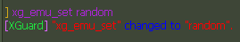

Начнём с предисловия: нет бана, который нельзя обойти.
Тип бана, сложность, и обход:
1. Бан по steam id + ip (fresh_ban) (легко)
Steam id - это идентификатор игрока, по которому обычно сохраняются данные (уровень, рейтинг, привилегии и т.д)
Для изменения steam id включите функцию
Steam id spoofer в любом чите или протекторе, например, в протекторе
Xguard её можно включить с помощью команды
xg_emu_set random или
xg_emu_set "id" (для сохранения данных)

Для изменения ip адреса включите
VPN (если у вас статический ip) или перезагрузите роутер, отключив его от питания на некоторое время (если у вас динамический ip)
Какой у вас тип ip можно узнать по ссылке -
Узнать тип ip
После изменения steam id и ip - бана не будет.
2. Бан по steam id + ip + метки в config.cfg (dopban) (легко)
Dopban - это плагин (платный), который перехватывает fresh_ban и записывает вам в config.cfg метку (рандом символы) в квары/ключи/бинды перед баном с помощью функции client_cmd (отправляет вам команду в консоль через пакет svc_stufftext) и при повторном присоединении к серверу проверяет ваш config.cfg на наличие меток.
Если метка есть, вы не сможете зайти, даже если сменили steam id и ip.
Чтобы dopban не смог занести в config.cfg метку, вы должны включить функцию блокировки пакетов svc_stufftext, обычно эта функция по умолчанию включена в протекторах.
Установите протектор или включите эту функцию в фурионе, перейдите во вкладку Settings -> Протектор -> Защита конфига кс (если у вас версия 1.795 или выше) или Misc -> Протектор -> Защита конфига кс (если у вас версия ниже 1.795)
После того как вы включите функцию блокировки пакетов svc_stufftext - dopban станет беспомощным мусором, вам останется только сменить steam id и ip (смотрите первый пункт)
Также хочу добавить, что с помощью функции client_cmd, которую использует плагин dopban, можно сломать config.cfg или засорить диск скриншотами, поэтому обязательно включайте функцию блокировки пакетов svc_stufftext :)
3. Бан по подсети (средне)
Подсеть - часть сети.
Пример: 77.73.69.0/24 - подсеть с IP-адресами с 77.73.69.1 по 77.73.69.254.
Если забанят подсеть 77.73.69.0 (где 0 - уже забаненая часть), вы не сможете играть с IP-адресами, у которых подсеть это "77.73.69".
То есть вы не сможете играть с IP-адресами 77.73.69.15, 77.73.69.37, 77.73.69.125 и так далее, так как у них у всех одинаковая подсеть.
Как узнать, что забанили подсеть? - при подключении к серверу у вас не будет загрузки, как будто у вас нет интернета.
Как обойти подсеть бан? - Переподключайтесь к VPN, пока он не выдаст вам новую подсеть, или смените регион/страну.
Не забудьте выполнить первый и второй пункт (если dopban установлен на сервере)
Дополнительная информация
Есть еще пара типов бана (двое остались) и их тяжело уже обойти.
Я бы сказал, что это за типы, но не могу, так как создатели серверов - побегут их ставить себе на серверы, вам этого не нужно, думаю)
Кстати, если вдруг вы уверены, что на 100% обошли бан, но почему-то бан остаётся и вы не можете играть - просто смените ник (это не рофл)), такое иногда бывает, редко правда, но бывает.